19th Annual Violin & Viola Recital
Program
Solo Program
| Name | Repertoire |
|---|---|
| 1. Heather Ng | Sonata in b minor by A. Soler |
| 2. Austin Fukuda | Concerto in C major by Kabalevsky |
| 3. Shadee Ghiassi | Trembling Leaves by Lachmund |
| 4. Tala Siksek | Zigeunerweisen by P. Sarasate |
| 5. Samantha Yee | Violin Concertino 2 op. 95 by L. Portnoff |
| 6. Cynthia Ouyang | Sonata by B. Marcello |
| 7. Joey Kwon | Melodie by C. Gluck |
| 8. Derek Guan | Black Eyes by traditional Russian piece |
| 9. Allison Liu | Violin Concertino 1 op. 14 by L. Portnoff |
| 10. Kate Owens | Violin Concertino op. 18 by L. Portnoff |
| 11. Stella Cao | Czardas by V. Monti |
| 12. Lucy Zhao | Concerto by J. B. Accolay |
| 13. Trinity Chen | Sonata by Grieg |
| 14. Claire Kim | Concerto by Glazunov |
| 15. Danny Yoo | Concerto in g minor by M. Bruch |
| 16. Bradley Son | Preludium and Allegro by F. Kreisler |
| 17. Allison Oh | Concerto in d minor by H. Wieniawski |
| 18. Eric Kim | Introduction and Rondo Capriccioso by C. Saint-Saens |
| 19. Grace An | Reverie by H. Wieniawski |
| 20. Anna Cho | Concerto No. 7 by H. Vieuxtemps |
| 21. Sean Lee | Sonata per la Grand' Viola e Orchestra by N. Paganini |
| 22. Anne-Sophie Kim | Sonate by P. Scharwenka |
| 23. Justin Hong | Sonata by Y. Bowen |
| 24. Andy Yoo | Concerto 3rd movement by B. Bartok |
| 25. Jaemin Song | Nigun by Bloch & Concerto mvt 3 by P. Tchaikovsky |
| 26. Chris Song | Concerto No. 5 by H. Vieuxtemps |
Orchestral Performance
Le quattro stagioni (Four Seasons) by A. Vivaldi
1. Concerto No. 1 in E major La primavera (Spring) I
2. Concerto No. 2 in G minor L'estate (Summer) I, III
3. Concerto No. 3 in F major L'autunno (Autumn) I
4. Concerto No. 4 in F minor L'inverno (Winter) II, and I
Student Profiles
1. Heather Ng (Violin)
- Satori International Music Festival, 1st Place Solo, 2022
- Southwestern Youth Music Festival, 3rd Place Solo, Duet, 2022
- Satori International Music Festival, 1st Place Solo, 2021
- President’s Volunteer Service Award, Gold, 2021
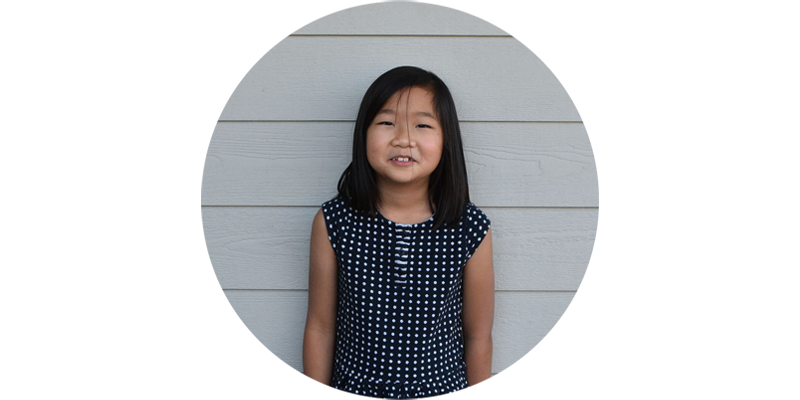
2. Austin Fukuda (Violin)
- Turtle Rock Elementary School String Orchestra, 2022-current
- Southwestern Youth Music Festival, 3rd Place Duet, 2022
- Satori International Music Festival, 1st Place Solo, 2021
- President’s Volunteer Service Award, Gold, 2021
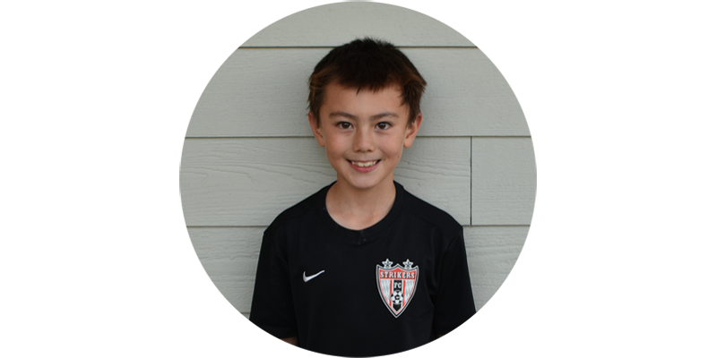
3. Shadee Ghiassi (Violin)
- Rancho San Joaquin Symphonic Orchestra, 2019-2021
- Amati Strings, 2021-current
- President’s Volunteer Service Award, Gold, 2021
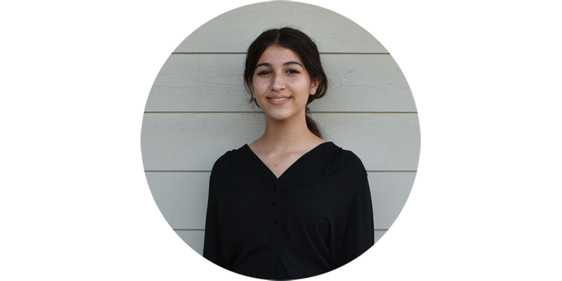
4. Tala Siksek (Violin)
- HPS Honors Performance Series, Carnegie Hall, 2023
- SCSBOA Southern High School Symphony Orchestra, 2021, 2022
- Tesoro High School Chamber Orchestra, Concertmaster, 2021-current
- Tesoro High School Orchestra, Teacher Assistant, 2022-current
- Tesoro High School Sinfonia Orchestra, Concertmaster, 2020-2021
- Satori International Music Festival, 2nd Place Solo, 2022
- OCYS Orange County Youth Symphony Orchestra, 2021-2022
- Capistrano District Honor Orchestra, 2017, 2018, 2019
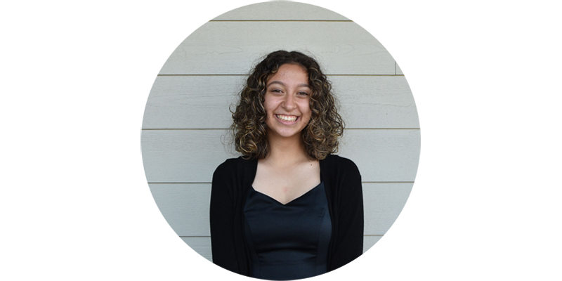
5. Samantha Yee (Violin)
- Spring Brook Elementary School Orchestra, 2021-current
- Satori International Music Festival, 1st Place Solo, 2022
- President’s Volunteer Service Award, Gold, 2021
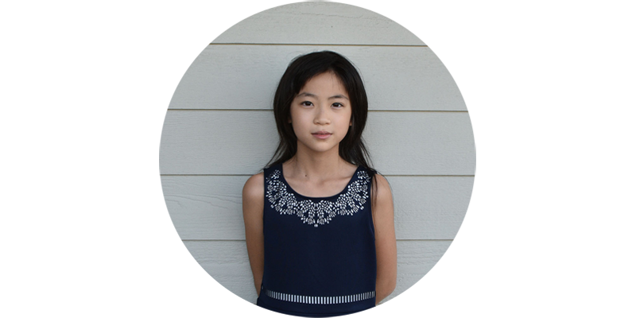
6. Cynthia Ouyang (Violin)
- Rancho San Joaquin School Symphonic Orchestra, 2021-current
- Annual Festival Orchestra Rancho San Joaquin Orchestra, 2022
- Satori International Music Festival, 2nd Place Solo, 2022
- President’s Volunteer Service Award, Gold, 2021
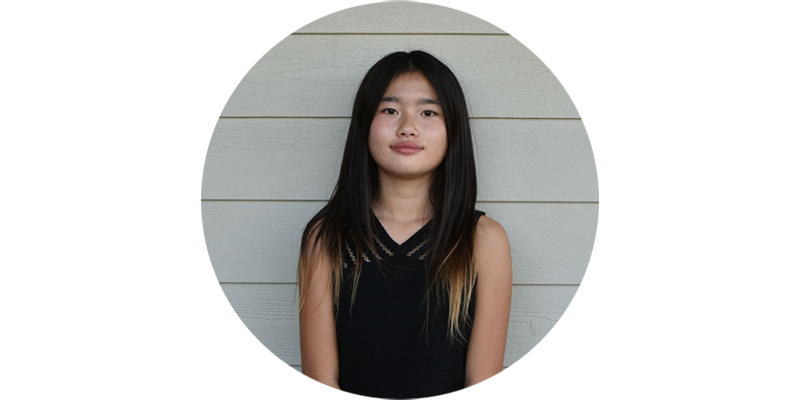
7. Joey Kwon (Violin)
- Irvine High School Symphonic Orchestra, 2022- current
- Irvine Woori Baptist Church, Music Performances, 2021-current
- President’s Volunteer Service Award, Gold, 2021
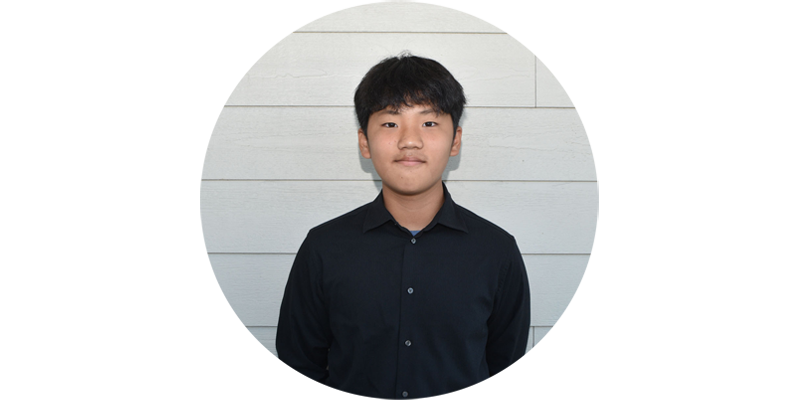
8. Derek Guan (Violin)
- Brywood Elementary String Orchestra, 2023
- Irvine Unified School District Elementary School Honor Orchestra, 2023
- Southwestern Youth Music Festival, 1st Place Solo, 2022
- Satori International Music Festival, 1st Place Solo, 2022
- Irvine Virtual Academy Elementary music class, 2021-2022
- President’s Volunteer Service Award, Gold, 2021
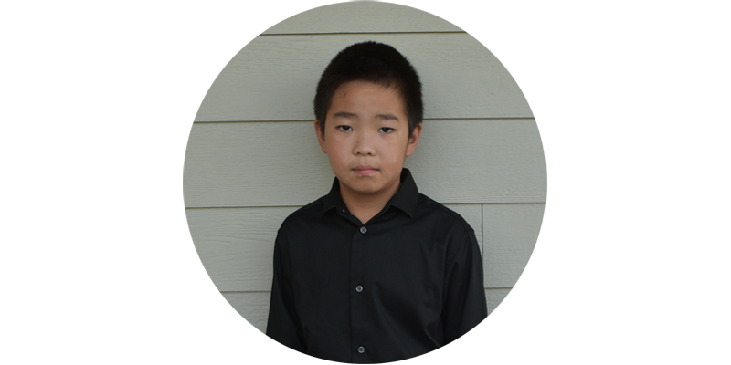
9. Allison Liu (Violin)
- IPSF Advanced Orchestra Summer Festival, 2022
- Irvine Unified School District Elementary School Honor Orchestra, 2023
- Santiago Hills Elementary School Orchestra, 2021-current
- Southwestern Youth Music Festival, 2nd Place Solo, 2022
- President’s Volunteer Service Award, Gold, 2021
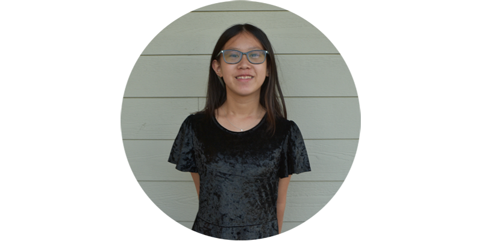
10. Kate Owens (Violin)
- Jeffrey Trailers’s Middle School Symphonic Orchestra, 2022-current
- President’s Volunteer Service Award, Gold, 2021
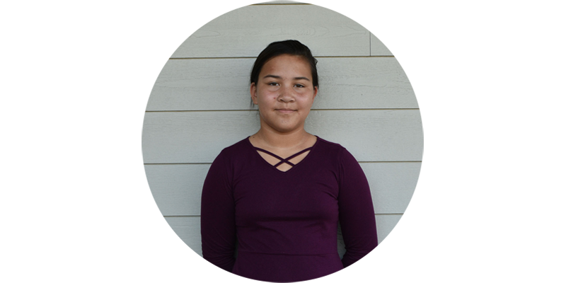
11. Stella Cao (Violin)
- Capistrano District Honor Orchestra, Segerstrom, 2023
- Ladera Ranch 6th grade School Orchestra, Concertmaster, 2022-present
- Ladera Talent Solo Concert Presentation, Soloist, 2023
- Chaparral Elementary School Orchestra, 2021-2022
- Satori International Music Festival, 1st Place Solo, 2021, 2022, 1st Place Duet, 2020
- Satori International Music Festival, 2nd Place Solo, 2019
- President’s Volunteer Service Award, Gold, 2021
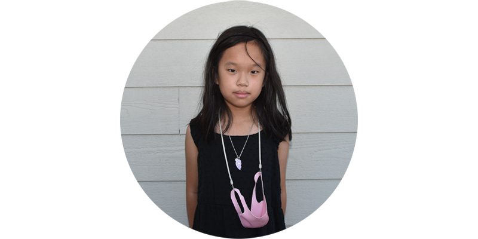
12. Lucy Zhao (Viola)
- SCSBOA Southern Junior High Symphonic Orchestra, 2022
- PSSS Pacific Symphony Santiago Strings Orchestra, 2022-present
- Satori International Music Festival, 1st Place Solo, 2022
- Irvine Unified School District Middle School Honor Orchestra, 2022
- University High School Symphonic Orchestra, 2022-present
- President’s Volunteer Service Award, Gold, 2021
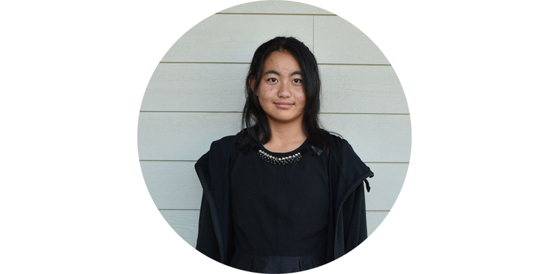
13. Trinity Chen (Violin)
- HPS Honors Performance Series, Carnegie Hall, 2023
- Sage Hills School String Orchestra, 2022-current
- Carden Hall School Special Music Presentation, 2018
- Certificate of Merit Level 8 Completion, 2022
- Satori International Music Festival, 1st Place Solo, 2022, 2018
- Southwestern Youth Music Festival, 1st Place Solo, 2018
- Prelude Strings Orchestra, 2019-2020
- St. Margaret Summer Music Festival Solo Strings Program & Orchestra, St. Juan Capistrano, 2016, 2017
- Community Youth Orchestra of Southern California, 2014-2017
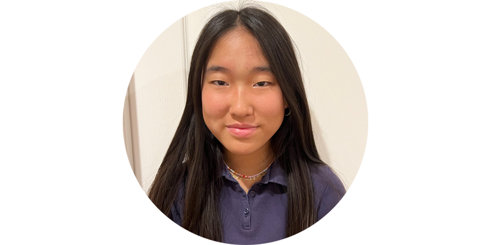
14. Claire Kim (Violin)
- SCSBOA Southern California Middle School Symphonic Orchestra, 2023
- SCSBOA Southern California Middle School Strings Orchestra, Concertmaster, Soloist, 2022
- SCSBOA Southern School Strings Orchestra, Virtual Performance, 2021
- OCYS Orange County Youth Symphony Orchestra, 2022-current
- Irvine Unified School District Middle School Honor Orchestra, 2022, 2023
- Prelude Chamber Strings Orchestra, Assistant Principal, 2021-22
- Lakeside Middle School Symphonic Orchestra, Concertmaster, 2022-current
- Satori International Music Festival, 1st Place Solo, 2022
- President’s Volunteer Service Award, Gold, 2021

15. Danny Yoo (Violin)
- CODA All State California Jr. High School Orchestra, Symphony Orchestra, Assistant Principal, 2023
- SCSBOA All Southern Middle School Strings Orchestra, Assistant Concertmaster, 2022
- Irvine Unified School District Middle School Honor Orchestra, Assistant Principal, 2022
- Satori International Music Festival, 1st Place Solo, 2022
- Southwestern Youth Music Festival, 4th Place Solo, 2022
- Rancho San Joaquin Symphonic Orchestra, 2021-current
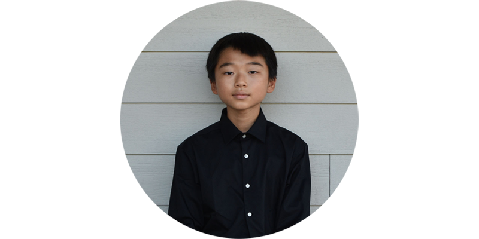
16. Bradley Son (Violin)
- PSSS Pacific Symphony Santiago Strings Orchestra, 2022-present
- SCSBOA All Southern Symphonic Orchestra, 2020, 2021
- University High School Symphonic Orchestra, 2022-present
- Chamber Music Institute/So Cal, 2022
- Irvine Unified School District Honor Orchestra, 2021, 2022
- Junior Chamber Music, trio, quartet, 2019-2021
- KidWorks Music Teaching Volunteer, 2022- current
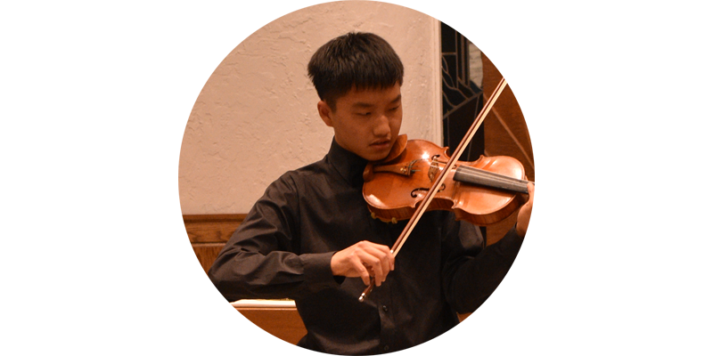
17. Allison Oh (Violin)
- CODA All State California High School String Orchestra, 2023
- SCSBOA All Southern Middle School Symphonic Orchestra, 2022
- PSSS Pacific Symphony Santiago Strings Orchestra, 2022-present
- Irvine Unified School District Middle School Honor Orchestra, 2022
- Northwood High School Concert Orchestra, Assoc. Concertmaster, 2022-present
- President’s Volunteer Service Award, Gold, 2021
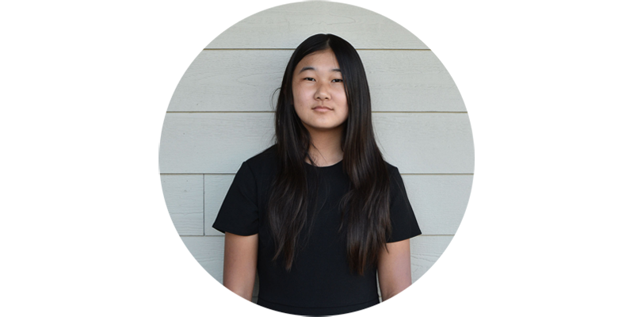
18. Eric Kim (Violin)
- CODA All State California High School String Orchestra, 2023
- SCSBOA Southern California High School Orchestra, 2023
- SCSBOA All Southern California Orchestra, 2020, 2021, 2022
- OCYS Orange County Youth Symphony Orchestra, 2021-current
- Satori International Music Festival, 2nd Place Solo, 2022
- Satori International Music Festival, 1st Place Solo 1st Place Duet, 2021
- Irvine Unified School District School Honor Orchestra, 2021, 2022
- Northwood High School Concert Orchestra, Principal, 2022-present
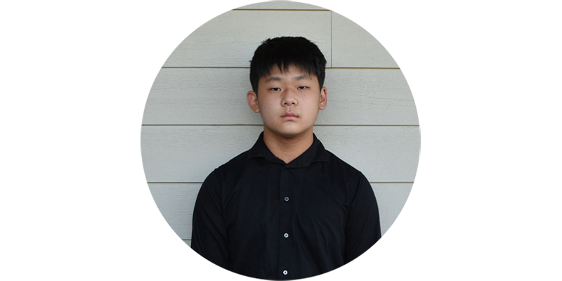
19. Grace An (Viola)
- HPS Honors Performance Series, Carnegie Hall, 2023
- OCYS Orange County Youth Symphony Orchestra, 2022-current
- Irvine Unified School District School Honor Orchestra, 2023
- Northwood High School Philharmonic Orchestra, 2022-present
- Satori International Music Festival, 2nd Place Solo, 2022
- President’s Volunteer Service Award, Gold, 2022
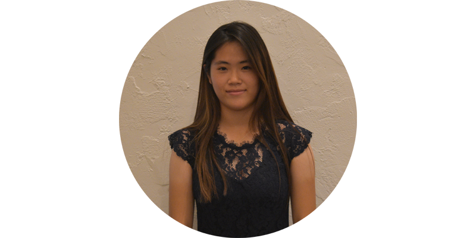
20. Anna Cho (Violin)
- HPS Honors Performance Series Symphony Orchestra, Carnegie Hall, 2023
- SCSBOA Southern California High School Orchestra, 2022, 2023
- SCSBOA All Southern California Orchestra, 2017, 2018
- OCYS Orange County Youth Symphony Orchestra, 2022-current
- Northwood High School Philharmonic Orchestra, 2022-current
- Northwood High School Concert Orchestra, Assoc. Concertmaster, 2021-2022
- Irvine Unified School District School Honor Orchestra, 2019
- Satori International Music Festival, 2nd Place Solo, 2021
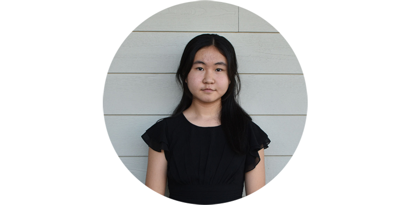
21. Sean Lee (Viola)
- CODA All State California High School Orchestra, Symphony Orchestra, 2023
- HPS Honors Performance Series, Carnegie Hall, 2023
- SCSBOA Southern California Orchestra, 2021, 2022
- PSYO Pacific Symphony Youth Orchestra, 2022- current
- OCYS Orange County Youth Symphony Orchestra, 2021-22
- Southwestern Youth Music Festival, 2nd Place Solo, 2022
- Satori International Music Festival, 2nd Place Solo, 2022
- Satori International Music Festival, 1st Place Solo, 2021
- Troy High School Symphony, Principal, 2020-current
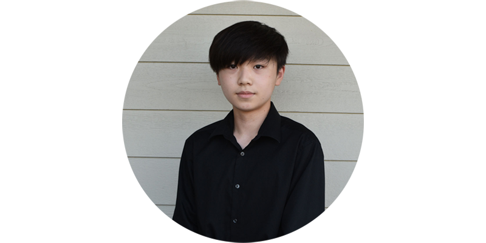
22. Anne-Sophie Kim (Viola)
- HPS Honors Performance Series, Carnegie Hall, Assistant Principal, 2023
- CODA All State California School Orchestra, 2023, 2019
- SCSBOA All Southern California High School Honors Full Orchestra, 2022, 2021
- OCYS Orange County Youth Symphony Orchestra, Principal, 2022-current, 2021-2022
- Irvine Unified School District Honor Orchestra, 2018 , 2019, 2023
- Portola High School Orchestra, Principal, 2022-2023
- Southwestern Youth Music Festival, 2nd Place Solo, 2022
- Musical Arts Competition of Orange County, 2nd highest award given, 2022
- Satori International Music Festival, 1st Place Solo, 2021
- Southwestern Youth Music Festival, 1st Place Solo, 2017
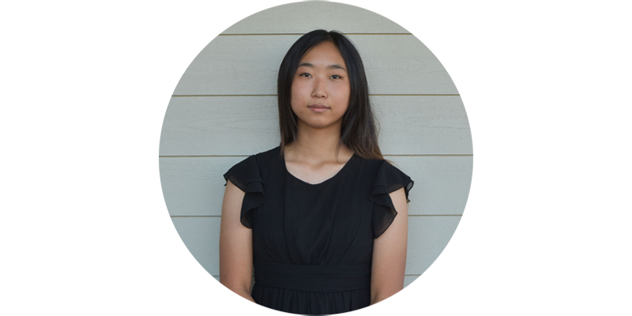
23. Justin Hong (Viola)
- OCSA Orange County School of the Arts, Winter Concert chamber quartet soli, 2022
- OCSA Orange County School of the Arts, Symphony Orchestra, 2020-current
- CODA All State California High School Orchestra, Symphony Orchestra, 2023
- PSYO Pacific Symphony Youth Orchestra, Assoc. Principal, 2022-current
- Satori International Music Festival, 1st Place Solo, 2021
- Southwestern Youth Music Festival, Winter Competition, 2nd place, 2021
- Irvine Unified School District Honor Orchestra, Honors Concert, 2019, 2018
- PSSS Pacific Symphony Santiago Strings, Principal, Soloist, 2021-22
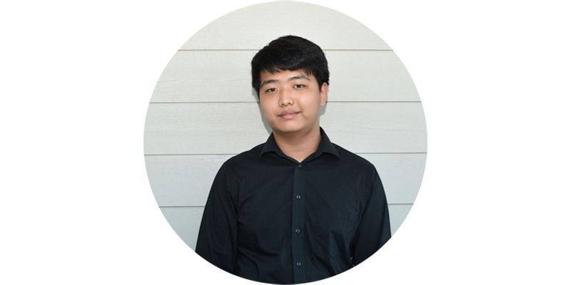
24. Andy Yoo (Viola)
- CODA All State California High School Orchestra, Symphony Orchestra, 2023
- CODA All State California School Orchestra, 2022, 2020
- SCSBOA Southern California High School Honors Full Orchestra, 2022, 2019
- PSYO Pacific Symphony Youth Orchestra, 2021-current
- Irvine Unified School District Honor High School Orchestra, Assistant Principal, 2023
- University High School Symphonic Orchestra, 2020-present
- Irvine District Honor Orchestra, 2017, 2020
- Satori International Music Festival, 2nd Place Open Solo, 2022
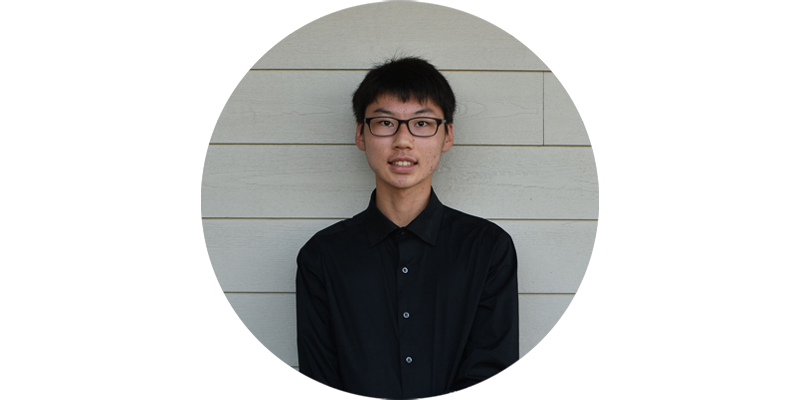
25. Jaemin Song (Violin)
- IAMPT International Association of Professional Music Teachers 1st Place, 2022
- American Protégé International Music Competition, 1st Place, 2022 (Carnegie Hall Performance, Scheduled June 23rd, 2023)
- PYSO Pacific Symphony Youth Orchestra, 2022-current, 2019-2021
- University High School, Concertmaster and Soloist, Symphony Orchestra, 2022-current
- Irvine Unified School District Honor Orchestra, 2023
- Musical Arts Competition of Orange County, 1st highest award given, 2022
- Satori International Music Festival, Grand Prize Winner, Jing Yu’s Virtuoso Scholarship $500 recipient, First Place Solo, 2022
- CODA All State California High School Orchestra, 2023, 2022
- CODA All State California Junior High School Orchestra, 2019
- SCSBOA Southern California High Full Orchestra, Concertmaster, 2021, 2022
- SCSBOA Southern California High Orchestra, Solo Performer winner chosen 700+ participants, 2021
- SCSBOA Southern California Junior High Full Orchestra, Concertmaster, 2019
- Irvine Unified School District Honor Orchestra, Concertmaster, 2019
- PSSS Pacific Symphony Santiago Strings, 2017-2019
- Southwestern Youth Music Festival, First Place Solo, 2018
- University High School, ASTA National Orchestra Festival, 2019
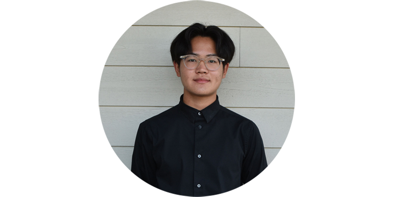
26. Chris Song (Violin)
- Carnegie Hall Performance, American Protégé International Music Competition, 1st Place, 2021
- CODA All State California High School Orchestra, 2022, 2021, 2020
- CODA All State California Junior High School Orchestra, 2019
- LAYPO Los Angeles Youth Philharmonic Orchestra, Concertmaster, 2022
- HPS Honors Performance Series, Carnegie Hall, Concertmaster, Symphony Orchestra 2023
- OCYS Orange County Youth Symphony Orchestra, Concerto Competition Winner, soloist with OCSY Segerstrom Hall, 2022
- OCYS Orange County Youth Symphony Orchestra, Concertmaster, 2021-current
- PSYO Pacific Symphony Youth Orchestra, 2019-2021
- Irvine Unified School District Honor Orchestra, Concertmaster, 2023
- Northwood High School Philharmonic Orchestra, Concertmaster, 2022-present
- SCSBOA Southern California Junior High Full Orchestra, Musco Center for the Arts, 2018
- PSSS Pacific Symphony Santiago Strings, 2017-2019
- Irvine Unified School District Festival Solo Participant, 2018
- Irvine Unified School District Honor Orchestra, 2017, 2018, 2019, 2022
- Satori International Music Festival, 1st Place Open, 2017, and Prodigy- 2019, 2020, 2021
- Southwest Bach Festival, Judge’s Grand Prize, Best in Category, 2018
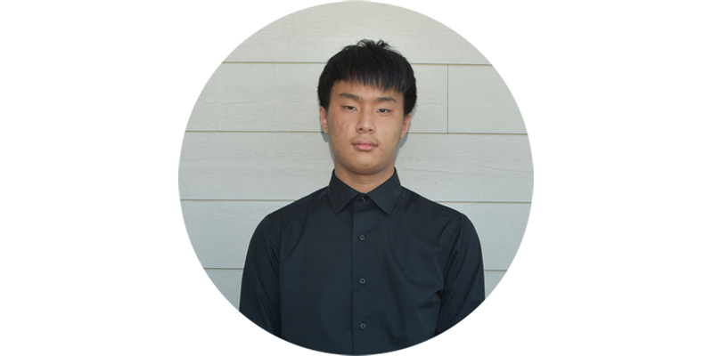
27. Jaehoon Song (Violin)
- UCI Computer Science class of 2024
- Alumni of Judy Yoo Music Studio
- Southwestern Music Festival, 1st Place Open, 2019
- Southwest Bach Festival, 1st Place Open Solo, 2019
- President’s Volunteer Service Award, Gold Award, 2018, 2022
- Amati Strings, leader, Co-Concertmaster, 2017-current
- University High School Symphonic Orchestra, 2018-present
- University High School String Orchestra, Concertmaster, 2017-2018
- West Vancouver Secondary School, Orchestra, Recognition of Outstanding Achievement, 2015~2017
- Canada Northshore Music Festival, Felde-Matsumoto Trophy, First place, Solo Repertoire, 2016, 2015
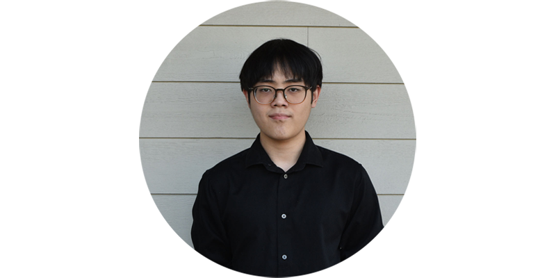
28. Alexander Farng (Cello)
- Amati Strings, 2021-Current
- Pelican Music Festival 1st Place, 2023
- Southwestern Youth Music Festival, 2nd Place, 2022
- Satori International Music Festival, 2nd Place, 2021
- The President's Volunteer Service Award, Gold, 2021
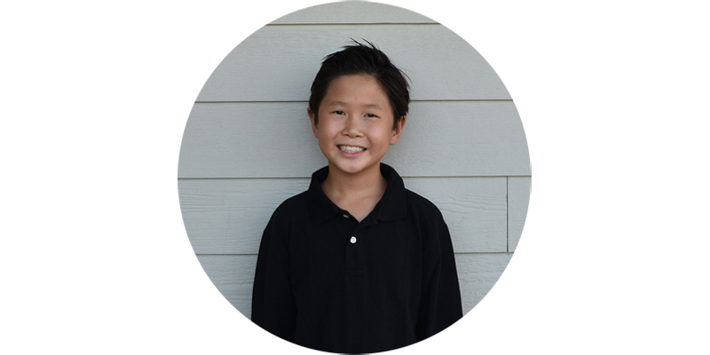